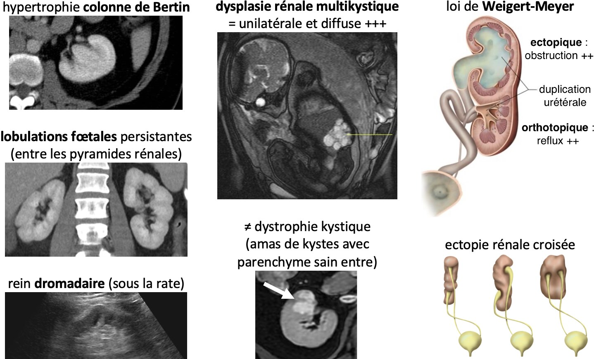

Accueil
imaios radiopaedia modèles de CR radref ccam rempl cima / elindo
Foie de taille et de morphologie normales, sans lésion focale.
Tronc porte avec flux hépatopète et veines sus-hépatiques hépatofuges.
Pas de dilatation des voies biliaires.
Vésicule biliaire alithiasique, non distendue et à parois fines.
Rate de taille normale.
Pancréas d'analyse limitée (interpositions aérodigestives), sans anomalie visible.
Reins de taille et de morphologie normales, sans lésion suspecte ni image lithiasique.
Vessie en semi-réplétion, au contenu anéchogène, sans anomalie de paroi.
Pas d'épanchement péritonéal.

Lésions hépatiquesHTP si TP > 13 mm et vitesse < 10 cm/s


Rein droit :
Grand axe mesurant mm.
Contours réguliers et bonne différenciation parenchymo-sinusale.
Pas de dilatation des cavités pyélo-calicielles.
Pas de lésion suspecte ni d'image lithiasique.
Rein gauche :
Grand axe mesurant mm.
Contours réguliers et bonne différenciation parenchymo-sinusale.
Pas de dilatation des cavités pyélo-calicielles.
Pas de lésion suspecte ni d'image lithiasique.
Vessie :
En réplétion, avec contenu anéchogène.
Pas d'anomalie de paroi décelable.
Pas d'épanchement péritonéal.

Lobe droit mesurant mm soit environ cc.
Lobe gauche mesurant mm soit environ cc.
Contours réguliers.
Echostructure homogène hyperéchogène par rapport au plan musculaire.
Vascularisation sans particularité au Doppler.
Pas d'image nodulaire significative.
Pas d'anomalie du tractus thyréoglosse.
Pas d'adénopathie dans les secteurs II, III, IV et VI.
Perméabilité des vaisseaux jugulo-carotidiens.
 4-10 cc/lobe, Doppler < 40 cm/s
20% lobe pyramidal = reliquat du tractus thyréoglosse
4-10 cc/lobe, Doppler < 40 cm/s
20% lobe pyramidal = reliquat du tractus thyréoglosse
- goitre hypoéchogène homogène
- hypervascularisation intense > 100 cm/s
- récidive : plus hétérogène et moins vascularisé

- goitre hypoéchogène multinodulaire
- hypervascularisation modérée 60 cm/s
- suivi/an, travées fibreuses hyperécho, /!\ lymphome/cancer

- contexte viral, douloureux
- plages hypoéchogène mal limitées peu vascularisées
- contrôle à M3 si pseudonodulaire

- 80% adénome parathyroïdien > 15% hyperplasie > 5% carcinome
- nodule hypoéchogène homogène > 1 cm
- légèrement plus vascularisé que le parenchyme thyroïdien

Absence de ganglion cervical suspect.
Thyroïde de taille et de morphologie normales, sans image nodulaire significative.
Pas d'image lithiasique ou de dilatation canalaire dans les glandes submandibulaires.
Aspect normal des glandes parotides, sans lésion focale dans le lobe superficiel.
Perméabilité des vaisseaux jugulo-carotidiens.


| Ganglion | Territoires de drainage |
|---|---|
pré-auriculaire |
partie supérieure du visage |
rétro-auriculaire |
cuir chevelu, oreille |
jugulo-carotidien |
thyroïde, oropharynx, anneau de Waldeyer |
sus-claviculaire D |
médiastin, poumons, œsophage |
Troisier (G) |
poumons, abdo-pelv, testicules |
axillaire |
membre sup, sein, paroi thoracique |
inguinal |
membre inf, OGE, paroi abdo inf |
Diastasis des muscles grands droits si > 20 mm
kyste épidermique / épidermoïde / sébacé = 90% des kystes ss-cut
- croissance lente, 70% dur > 30% mou, parallèle à la peau
- finement hétérogène, paroi épaisse hypo, renforcement post
- pas de vascularisation, amincissement dermique > 50%
- 10% rupture/infection = contours lobulés, hypervasc périph
- DD = méta mélanome, sarcome superficiel (rare ++)

Formation ovalaire sous-cutanée finement hétérogène, aux contours lisses et réguliers, à paroi épaisse hypoéchogène, avec renforcement postérieur, sans vascularisation : aspect évocateur de kyste épidermoïde.
- masse superficielle compressible et indolore
- bien limitée, < 5 cm, pas de flux doppler, septas fibreux < 2 mm

Formation ovalaire superficielle, sus-aponévrotique, compressible et indolore, sans flux Doppler : aspect évocateur de lipome.
- paroi abdominale, croissance lente, dans le plan musculaire
- masse hypoéchogène bien circonscrite

Examen en position debout lors de manœuvres de Valsalva répétées.
Absence de hernie inguinale mise en évidence à l'exploration de la paroi abdominale.

 DD douleurs inguinales = arthrose hanche/rachis, pubalgie du sportif
DD douleurs inguinales = arthrose hanche/rachis, pubalgie du sportif
Testicule droit :
Dimensions mesurant mm soit environ cc.
Echostructure homogène, sans lésion focale suspecte.
Epididyme sans particularité.
Canal déférent suivi jusqu'à l'anneau inguinal.
Testicule gauche :
Dimensions mesurant mm soit environ cc.
Echostructure homogène, sans lésion focale suspecte.
Epididyme sans particularité.
Canal déférent suivi jusqu'à l'anneau inguinal.
Etude Doppler :
Vascularisation symétrique sans particularité.
 12-20 cc
Tumeur adénomatoïde
Spermatocèle
Epididymite
Ectasie tubulaire du rete testis
12-20 cc
Tumeur adénomatoïde
Spermatocèle
Epididymite
Ectasie tubulaire du rete testis
Reins :
Grand axe mesurant mm à droite et mm à gauche.
Contours réguliers et différenciation parenchymo-sinusale satisfaisante.
Pas de dilatation des cavités pyélo-calicielles.
Pas de lésion suspecte ni d'image lithiasique.
Vessie pré-mictionnelle :
En réplétion, au contenu anéchogène.
Détrusor fin et régulier, sans diverticule.
Pas d'épanchement péritonéal.
Prostate par voie sus-pubienne :
Dimensions mesurant mm soit environ cc.
Lobe médian avec protrusion intravésicale mesurant mm.
Echostructure homogène avec contours réguliers.
Vésicules séminales sans particularité.
Vessie post-mictionnelle :
Résidu de cc.
 hypertrophie si > 30 cc
hypertrophie si > 30 cc